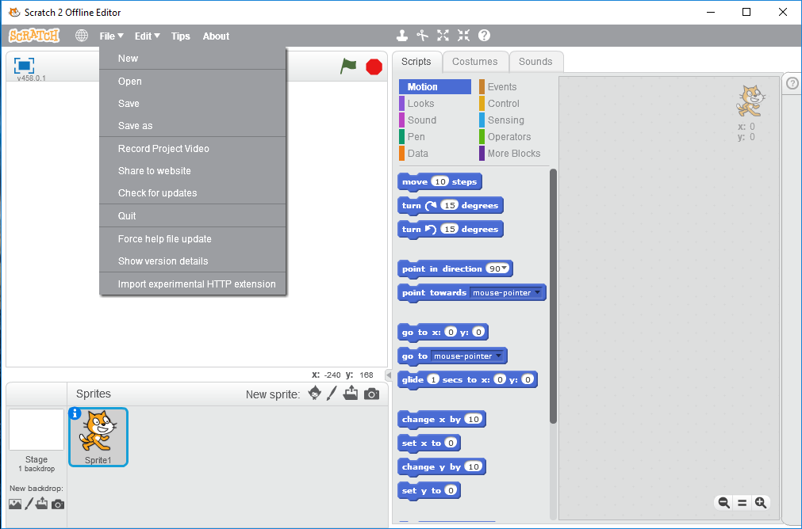
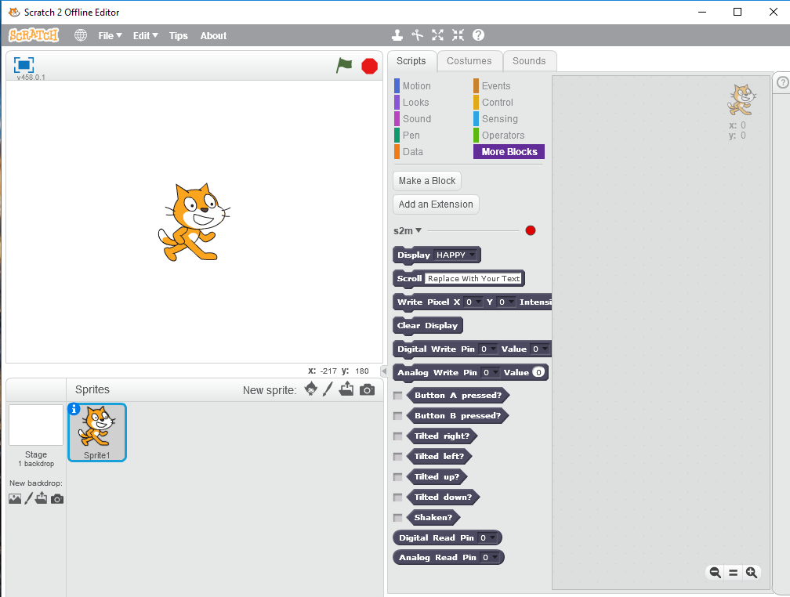

Translating The s2m Blocks
The section will explain how to translate the custom blocks to a language other than English.
If you create a translation, and would like me to include it as part of s2m's distribution, please send me your tested .s2e Scratch extension specification file.
You will be given full credit for the translation and your name will appear in this User's Guide
Let's Get Started
You should always use the Github .s2e file for the basis of your translation, since it will be the latest file available. That file may be found on Github here.
The Scratch extension specification is a JSON formatted file.
For detailed information on the Scratch specification, you may refer to the Extension Specification.
When making changes to this file, do it in very small steps and then check your work by loading the changes into Scratch. If there are any errors introduced into the file, Scratch will not provide any error messages, and when you go to view the blocks in the More Blocks section, nothing will appear.
Luckily, you can check for syntax errors by running the file through the JSON Validator.
Loading A Block Specification File Into Scratch
Before we describe the contents of the file, let's learn how to install the .s2e file into Scratch to create the custom extension blocks.
After downloading s2m.s2e as described in the section above, open the Scratch editor. You do not have to have s2m running to load and view the blocks in Scratch.
While holding the Shift button on your keyboard and click on the File menu in the upper left hand corner of the Scratch editor. The drop down list should have "Import experimental HTTP extension" as the last item in the menu. Select this item and choose your copy of s2m.s2e.

If you then go to the More Blocks section, you should see the s2m blocks appear.

The connection indicator should be red. This is normal when s2m is not connected to Scratch.
Each time you make a change to this file, you will be reloading the file to your check your work.
Understanding The Block Specification File
1 {
2 "extensionName": "s2m",
3 "extensionPort": 50209,
4 "url": "https://mryslab.github.io/s2m/",
5 "blockSpecs": [
6 [
7 " ",
8 "Display %m.images",
9 "display_image",
10 "HAPPY"
11 ],
12 [
13 " ",
14 "Scroll %s",
15 "scroll",
16 "Replace With Your Text"
17 ],
18 [
19 " ",
20 "Write Pixel X %n Y %n Intensity %n",
21 "write_pixel",
22 "0",
23 "0",
24 "9"
25 ],
26 [
27 " ",
28 "Clear Display",
29 "display_clear"
30 ],
31 [
32 " ",
33 "Digital Write Pin %m.pins Value %m.val",
34 "digital_write",
35 "0",
36 "0"
37 ],
38 [
39 " ",
40 "Analog Write Pin %m.pins Value %n",
41 "analog_write",
42 "0",
43 "0"
44 ],
45 [
46 "b",
47 "Button A pressed?",
48 "button_a_pressed"
49 ],
50 [
51 "b",
52 "Button B pressed?",
53 "button_b_pressed"
54 ],
55 [
56 "b",
57 "Tilted right?",
58 "tilted_right"
59 ],
60 [
61 "b",
62 "Tilted left?",
63 "tilted_left"
64 ],
65 [
66 "b",
67 "Tilted up?",
68 "tilted_up"
69 ],
70 [
71 "b",
72 "Tilted down?",
73 "tilted_down"
74 ],
75 [
76 "b",
77 "Shaken?",
78 "shaken"
79 ],
80 [
81 "r",
82 "Digital Read Pin %m.pins",
83 "digital_read",
84 "0"
85 ],
86 [
87 "r",
88 "Analog Read Pin %m.pins",
89 "analog_read",
90 "0"
91 ]
92 ],
93 "menus": {
94 "images": [
95 "HAPPY",
96 "SAD",
97 "ANGRY",
98 "SMILE",
99 "HEART",
100 "CONFUSED",
101 "ASLEEP",
102 "SURPRISED",
103 "SILLY",
104 "FABULOUS",
105 "MEH",
106 "YES",
107 "NO",
108 "TRIANGLE",
109 "DIAMOND",
110 "DIAMOND_SMALL",
111 "SQUARE",
112 "SQUARE_SMALL",
113 "TARGET",
114 "STICKFIGURE",
115 "RABBIT",
116 "COW",
117 "ROLLERSKATE",
118 "HOUSE",
119 "SNAKE",
120 "ARROW_N",
121 "ARROW_NE",
122 "ARROW_E",
123 "ARROW_SE",
124 "ARROW_S",
125 "ARROW_SW",
126 "ARROW_W",
127 "ARROW_NW"
128 ],
129 "pins": [
130 "0",
131 "1",
132 "2"
133 ],
134 "val": [
135 "0",
136 "1"
137 ]
138 }
139 }
The file is comprised of three major sections:
The Specification Header
Lines 1-4 contain the header. In general you should not modify this section. The one item you can modify, if you wish, is the extension name shown on line 2. The extension name will appear in the More Blocks section of Scratch to the left of the connection indicator. For example, if you wish to change s2m to s2m_Italiano you would modify line 2 to look like
"extensionName": "s2m_Italiano",
The Block Descriptors
Lines 5-92 describe the type of block (rectangular command block, round reporter block, etc.), any parameters the block contains, a block identifier string, and a set of default values for the parameters.
This is the descriptor for the Display image block.
6 [
7 " ",
8 "Display %m.images",
9 "display_image",
10 "HAPPY"
11 ],
The Menu Descriptors
See this section for a discussion of menu descriptors and this section for a discussion on providing translations for them.
First Line Of The Descriptor
The first line of every descriptor describes the shape and function of the block we wish to use.
| Symbol | Block Type | Block Shape |
|---|---|---|
| " " | Command | Rectangular |
| "b" | Boolean Reporter | Pointy |
| "r" | Reporter | Round |
This line should not be changed!!
Second Line Of The Descriptor
This line contains the text and parameters for the block.
| Parameter Symbol | Parameter Type | Note |
|---|---|---|
| %m.NAME_OF_MENU | Menu (Drop Down List) | Use the NAME_OF_MENU to see the choices. |
| %s | String | |
| %n | Numeric |
For the Display images block, the menu is named images.
The images menu is defined at the bottom of the file at lines 94-130.
Lines 8, 20, 33 40, 82 and 88 all contain "menu" parameters.
Line 33, contains multiple menu parameters:
33 "Digital Write Pin %m.pins Value %m.val",
Line 14 contains a single string parameter, and line 40 contains a single numeric parameter.
Modifying The Second Line Of The Block Descriptor
In this line, you may change the English to the language of your choice. In addition, you may reorder the parameters in the block. You may not change the parameter type.
The Third Line Of The Descriptor
This is the value that Scratch uses as an identification for the block when the block is executed.
Do not modify this line. It is used internally by s2m.
The Fourth and Following Lines For A Given Descriptor
The entries in this line and for any following line, is the initial value shown for each parameter.
Let's look at the Write Pixel block as an example
18 [
19 " ",
20 "Write Pixel X %n Y %n Intensity %n",
21 "write_pixel",
22 "0",
23 "0",
24 "9"
25 ],
Lines 22, 23, and 24 contain the initial of zero for the row, zero for the column and 9 for the intensity.
Do not change any of the numeric initial values for any of the blocks.
You may however, modify line 16 to be any string you wish, and line 10. Line 10 should match the string contained in line 65.
Translating The Menu Descriptors
Only the strings in lines 95 - 128 can be modified. All other menus should not be modified. For the names of the images, you will need to append a 2 digit number followed by an underbar to the translated name of each shape.
For example, if you wanted to translate "HAPPY" on line 95 to Italian, you would change it to "01_Contento". The next item in the menu would start with "02_". Each item's 2 digit number is 1 greater than the one preceding it. Also line 10, would need to be translated to "01_Contento" as well, to set the initial value within the block.
In Summary
To provide a translation:
- Translate the text contained in the second line of each block descriptor.
- Order the parameters to meet the grammatical needs of your language.
- If you wish to translate the image names, remember to precede each translation with a 2 digit sequential number followed by an underbar and then the image name. Finally, set the initial value in the display image block to be the same as that of the first entry in the image menu.